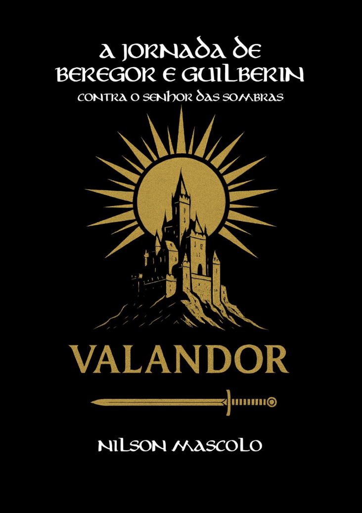
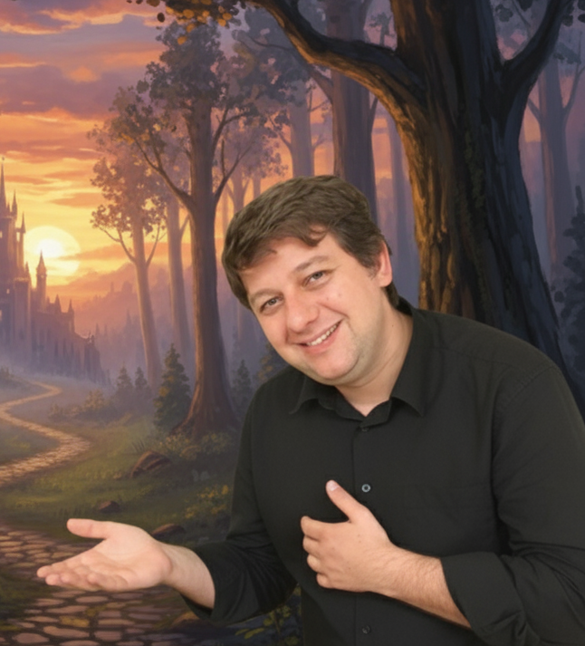

Um pastor.
Seu cão fiel.
Uma guerra iminente.
Pelo destino das Terras Livres. Adentre um mundo de alta fantasia onde a coragem dos seres mais humildes é a nossa única esperança contra o avanço implacável das trevas.
Disponível em eBook Kindle, Capa Comum e Capa Dura.
A Guerra pelo Destino das Terras Livres
Contra o Senhor das Sombras

O Senhor das Sombras e o Exército de Gorrmash
Das profundezas do Abismo, Hor, o Senhor das Sombras, desperta com uma ambição letal: conquistar Valandor e subjugar todas as Terras Livres. Para isso, ele ergue um exército monstruoso formado por Gorrmash e homens de corações corrompidos, prontos para marchar sobre a paz dos reinos do mundo.
Nas verdes e pacatas colinas de Saváris, onde a guerra parecia ser apenas uma lenda distante, vive Beregor. Ao lado de seu fiel companheiro, o cão Guilberin, este jovem pastor de coração puro se vê subitamente arrancado de sua vida simples.
Arrastados para uma jornada brutal e majestosa, eles se unem aos grandes povos aliados em um confronto decisivo. Se falharem, Valandor cairá, e toda a luz e a beleza do mundo serão reduzidas à servidão ou apagadas para sempre.
Explore o Universo de Valandor e Saváris
Uma das maiores obras da alta fantasia brasileira, onde cada detalhe foi construído para criar uma experiência arrebatadora.
Os Heróis: Beregor e Guilberin
O Pastor de Luz e seu incansável cão fiel provam que a verdadeira nobreza não precisa vir do sangue dos reis. No epicentro do medo, a lealdade inabalável de Guilberin e a coragem inesperada de Beregor são a chama que guiará os defensores da liberdade.
Mapa das Terras Livres
Da serenidade luminosa de Saváris até as vastidões consumidas pela sombra, o mundo de Valandor é vasto e repleto de perigos. Estude a geografia das Terras Livres e acompanhe o trajeto épico dos nossos heróis pelas florestas, montanhas e reinos ancestrais.
Explorar Mapa em Alta ResoluçãoOnde Comprar o Livro Físico e eBook
Sua aventura está a apenas um clique de distância. Escolha como deseja mergulhar na leitura e garanta o seu exemplar hoje mesmo.
eBook Kindle
Carregue a magia de Valandor com você no celular, tablet ou Kindle. Acesso imediato à história logo após a confirmação.
Versão Impressa
Edições físicas lindamente diagramadas para colecionadores e apaixonados pelo toque do papel.
Mercado Livre
Prefere comprar pelo Mercado Livre? Aproveite o envio ultra-rápido para todo o Brasil. Receba em casa.
Compra 100% segura e envio rápido garantido pelas maiores plataformas do Brasil.

Conheça o Autor
Nilson Mascolo
Músico, escritor e artesão ítalo-brasileiro, Nilson Mascolo Filho une sua profunda sensibilidade artística a um amor incondicional pela literatura fantástica. Como autor de diversas obras, ele busca resgatar a nobreza e a magia clássica em cada narrativa.
Fortemente inspirado pelas obras de Tolkien e C. S. Lewis, ele escreveu A Jornada de Beregor e Guilberin como um verdadeiro legado literário. Mais do que contar uma história de guerra e magos, Nilson busca lembrar o leitor do poder indestrutível da amizade, da coragem e da esperança humana nos momentos de maior escuridão.
Perguntas Frequentes (FAQ)
Tudo o que você precisa saber sobre a obra.